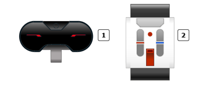
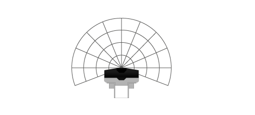
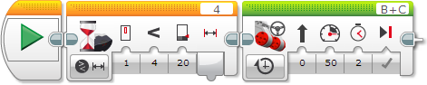

					<table cellpadding="0" cellspacing="0" border="0"><tbody><tr><td>
	
						<h1>使用红外传感器“信标”模式<a name="top"></a></h1>
		<div id="block_853" class="block blockHeader">
				<div class="description"><br>
<br>
 红外传感器<br>
 远程红外信标<br>
<br>
在“信标”模式中，红外传感器可以检测传感器前方的远程红外信标（IR 信标）的近似位置。传感器可以为您提供信标的近程（与传感器之间的相对距离）及其标头（与传感器指向的方向之间的角度）。例如，可以使用“信标”模式使机器人搜寻 IR 信标并向着信标驱动。<br>
<br>
</div>
			</div>
	<div id="block_854" class="block blockChaptor">
		<div class="title"><a name="TurnOnTheBeaconAndChooseAChannel" style="position:relative; top:-10px;"></a>开启信标并选择频道</div>
		<div class="description">通过按压 IR 信标顶部的“信标模式”按钮来开启信标。LED 指示灯会开启并保持开启状态。信标会保持开启状态并连续发射，直至再次按压“信标模式”按钮以关闭它。<br>
<br>
从频道选择器选择四个频道之一。红外传感器只会在程序中指定的频道上检测信标。</div>
	</div>
	<div id="block_855" class="block blockChaptor">
		<div class="title"><a name="InfraredSensorBeaconModeData" style="position:relative; top:-10px;"></a>红外传感器“信标”模式数据</div>
		<div class="description">在“信标”模式中，红外传感器会提供以下数据：</div>
	</div>
	<div id="block_856" class="block blockTable ">
		<table class="blockTable">
		

			<tbody><tr>
<th>数据</th><th>类型</th><th>值</th><th>备注</th>			</tr>
<tr><td>已检测 <a name="Detected" style="position:relative; top:-10px;"></a></td><td>逻辑</td><td>真/伪</td><td>如果在指定频道上检测到 IR 信标，则为“真”，否则为“伪”。</td></tr><tr><td>近程 <a name="Proximity" style="position:relative; top:-10px;"></a></td><td>数字</td><td>0 至 100</td><td>与信标之间的相对距离。0 表示非常接近，100 表示遥远。如果完全未检测到信标，则近程为 100。</td></tr><tr><td>标头 <a name="Heading" style="position:relative; top:-10px;"></a></td><td>数字</td><td>-25 至 25</td><td>0 表示信标位于传感器正前方，负值表示位于左侧，正值表示位于右侧。</td></tr>		</tbody></table>
	</div>
	<div id="block_857" class="block blockTip">
		<div class="title">提示和技巧</div>
		<div class="boxContent">
			<div class="description">近程和标头的值不直接对应于特定距离和角度。这些值取决于信号的强度和其他因素。</div>
				</div>
	</div>
	<div id="block_859" class="block blockExample">
		<div class="title">示例</div>
		<div class="image"></div>
		<div class="description">此程序会使机器人在 IR 信标开启并与红外传感器足够接近时开始驱动。它使用“红外传感器 － 比较 － 信标近程”模式的<a href="./index.html?id=Wait">等待</a>模块等待近程小于 20，然后向前驱动 2 秒。</div>
	</div>
	<div id="block_860" class="block blockChaptor">
		<div class="title"><a name="InfraredSensorBeaconModeBlocksAndModes" style="position:relative; top:-10px;"></a>红外传感器“信标”模式模块和模式</div>
		<div class="description">下表显示可以与“信标”模式的红外传感器一起使用的所有编程模块和模式。</div>
	</div>
	<div id="block_861" class="block blockTable ">
		<table class="blockTable">
		

			<tbody><tr>
<th>模块</th><th>模式</th><th>用途</th>			</tr>
<tr><td><a href="./index.html?id=Wait">等待</a> <a name="Mode_WaitInfraredSensorCompareBeaconSeekerHeading" style="position:relative; top:-10px;"></a></td><td>红外传感器 － 比较 － 信标标头</td><td>等待检测到信标并等待标头达到指定值。</td></tr><tr><td><a href="./index.html?id=Wait">等待</a> <a name="Mode_WaitInfraredSensorCompareBeaconSeekerProximity" style="position:relative; top:-10px;"></a></td><td>红外传感器 － 比较 － 信标近程</td><td>等待检测到信标并等待近程达到指定值。</td></tr><tr><td><a href="./index.html?id=Wait">等待</a></td><td>红外传感器 － 更改 － 信标标头</td><td>等待信标标头按指定量更改。</td></tr><tr><td><a href="./index.html?id=Wait">等待</a></td><td>红外传感器 － 更改 － 信标近程</td><td>等待信标近程按指定量更改。</td></tr><tr><td><a href="./index.html?id=LoopCondition">循环</a> <a name="Mode_LoopInfraredSensorCompareBeaconSeekerHeading" style="position:relative; top:-10px;"></a></td><td>红外传感器 － 信标标头</td><td>重复模块序列，直至信标标头达到指定值。</td></tr><tr><td><a href="./index.html?id=LoopCondition">循环</a> <a name="Mode_LoopInfraredSensorCompareBeaconSeekerProximity" style="position:relative; top:-10px;"></a></td><td>红外传感器 － 信标近程</td><td>重复模块序列，直至信标近程达到指定值。</td></tr><tr><td><a href="./index.html?id=CaseSelector">切换</a></td><td>红外传感器 － 信标标头</td><td>根据信标标头在两个模块序列之间进行选择。</td></tr><tr><td><a href="./index.html?id=CaseSelector">切换</a></td><td>红外传感器 － 信标近程</td><td>根据信标近程在两个模块序列之间进行选择。</td></tr><tr><td><a href="./index.html?id=InfraredSensor">红外传感器</a></td><td>测量 － 信标</td><td>通过数字数据线获取信标标头和近程，并通过逻辑数据线获取“已检测”状态。</td></tr><tr><td><a href="./index.html?id=InfraredSensor">红外传感器</a> <a name="Mode_SwitchInfraredSensorCompareBeaconSeekerHeading" style="position:relative; top:-10px;"></a></td><td>比较 － 信标标头</td><td>将信标标头与阈值进行比较，并通过逻辑数据线获取结果。</td></tr><tr><td><a href="./index.html?id=InfraredSensor">红外传感器</a> <a name="Mode_SwitchInfraredSensorCompareBeaconSeekerProximity" style="position:relative; top:-10px;"></a></td><td>比较 － 信标近程</td><td>将信标近程与阈值进行比较，并通过逻辑数据线获取结果。</td></tr>		</tbody></table>
	</div>
	
			<div id="quick">
				<div class="header"><a href="./index.html?id=UsingSensors_Infrared_Beacon#header">IR 信标模式</a></div>
					<div class="quickText">快速链接</div>
					
					<ul>
	<li><a href="./index.html?id=UsingSensors_Infrared_Beacon#TurnOnTheBeaconAndChooseAChannel">开启信标并选择频道</a></li><li><a href="./index.html?id=UsingSensors_Infrared_Beacon#InfraredSensorBeaconModeData">红外传感器“信标”模式数据</a></li><li><a href="./index.html?id=UsingSensors_Infrared_Beacon#InfraredSensorBeaconModeBlocksAndModes">红外传感器“信标”模式模块和模式</a></li>					</ul>
			</div>
	
	</td></tr></tbody></table>